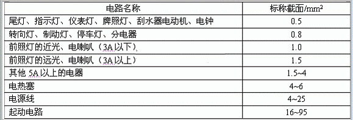
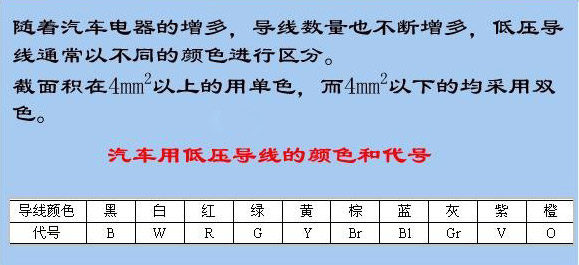

汽车电线束导线的颜色代码识别
1、低压导线
普通低压导线：普通低压导线为铜质多丝软线。导线的选择主要根据用电设备的工作电流进行选择，但最小不得小于0.5mm2。
起动电缆：起动电缆用于连接蓄电池与起动机开关的主接线柱，截面有25、35、50、70mm2等多种规格，允许电流达到500-1000A。为了保证起动机正常工作，并发出足够的功率，要求在线路上第100A的电流电压降不得超过0.1-0.15V。
屏蔽线：屏蔽线也称同轴电缆，其作用是将导线与外界的磁场隔离，避免导线受外界磁场影响而产生干扰，尤其在防止汽油机高压点火干扰方面非常有效。屏蔽线常用于低压微弱信号线路，如天线连接线及各种传感器和电子控制单元之间的通讯，在爆震信号电路、氧传感器信号电路等处使用普遍。
蓄电池搭铁电缆：蓄电池的搭铁线是由铜丝编织而成的扁形软铜线，国产汽车常用的搭铁线长度有300、450、600、760mm四种。
汽车电线束导线的颜色代码识别

汽车电线束导线的颜色代码识别

汽车电线束导线的颜色代码识别

2、高压线
高压导线用来传送高压电，由于工作电压很高，电流强度较小，因此高压导线的绝缘包层很厚，耐压性能很好，但线芯截面积很小。国产汽车用高压导线有铜芯线和阻尼线两种。
3、汽车线束
线束：汽车上的全车线路（除高压线之外），为了不零乱，安装方便和保护导线的绝缘，一般都将同路的不同规格的导线用绵纱编织或用薄聚氯乙烯带半叠缠绕包扎成束。
线束的组成：由导线、端子、插接器、护套等组成。
端子：一般由黄铜、紫铜、铅材料制成，它与导线的连接采用冷铆压合而成。
插接器：用于导线之间的连接，为了保证连接可靠，一般都用一次锁紧、二次锁紧装置。
安装线束注意事项：
l 线束应用卡簧或绊钉固定，以免松动磨坏。
l 线束不可拉得过紧，尤其在拐弯处更要注意。
l 连接电器时，应根据插接器的规格以及导线的颜色或接头处套管的颜色，分别接于电器上，若不容易辨别导线的头尾时，一般可用试灯分。
国产旗下线束颜色代码：
美国汽车线束颜色代码
国产旗下线束颜色代码：
| 英文 | 中文 | 缩写 | 英文 | 中文 | 缩写 |
|---|---|---|---|---|---|
| Black | 黑色 | B | Orange | 橙色 | O |
| White | 白色 | W | Yellow | 黄色 | Y |
| Gray | 灰色 | Gr | Green | 绿色 | G |
| Brown | 棕色 | Br | Blue | 蓝色 | Bl |
| Red | 红色 | R | Violet | 紫色 | V |
美国汽车线束颜色代码
| 缩 写 | 英 文 | 中 文 | 缩 写 | 英 文 | 中 文 |
| Bk | Black | 黑 色 | Bu | Blue | 蓝 色 |
| BN | Brown | 棕 色 | CR | Clear | 透 明 |
| Dk Bu | Dark Blue | 深蓝色 | Dk GN | Dark Green | 深绿色 |
| GN | Green | 绿 色 | GY | Gray | 灰 色 |
| LT Bu | Light Blue | 浅蓝色 | LT GN | Light Green | 浅绿色 |
| OG | Orange | 橙 色 | Pk | Pink | 粉红色 |
| PL | Purple | 紫 色 | RD | Red | 红 色 |
| TN | Tan | 褐 色 | VI | Violet | 粉紫色 |
| WT | White | 白 色 | YL | Yellow | 黄 色 |
欧洲汽车线束颜色代码
| 缩 写 | 英 文 | 中 文 | 缩 写 | 英 文 | 中 文 |
| BL | Blue | 蓝 色 | BR | Brown | 棕 色 |
| EL | Gream | 乳白色 | GE | Yellow | 黄 色 |
| GN | Green | 绿 色 | GR | Gray | 灰 色 |
| M | Maroon | 褐红色 | NF | Neutral | 浅灰色 |
| OG | Orange | 橙 色 | RS | Pink | 粉红色 |
| RT | Red | 红 色 | SW | Black | 黑 色 |
| VI | Violet | 粉紫色 | WS | White | 白 色 |
| HBL | Light Blue | 浅蓝色 | HGN | Light Green | 浅绿色 |
汽车电路中各系统低压电线主色含义
| 序 号 | 系 统 名 称 | 电线主色 | 代 号 |
| 1 | 电气装置接地线 | 黑 | B |
| 2 | 点火、启动系统 | 白 | W |
| 3 | 电源系统 | 红 | R |
| 4 | 灯光信号系统(包括转向指示灯) | 绿 | G |
| 5 | 防空灯系统及车身内部照明系统 | 黄 | Y |
| 6 | 仪表及报警指示系统和喇叭系统 | 棕 | Br |
| 7 | 前照灯、雾灯等外部灯光照明系统 | 蓝 | BL |
| 8 | 各种辅助电动机及电气操纵系统 | 灰 | Gr |
| 9 | 收放音机、电钟、点烟器等辅助装置系统 | 紫 | V |
汽车用低压导线允许载电流/A
| 铜心电线截面积/mm2 | 0.5 | 0.75 | 1 | 1.5 | 2.5 | 4 | 6 | 10 | 16 | 25 | 35 | 50 |
| 载流量60% | 7.5 | 9.6 | 11.4 | 14.4 | 19.2 | 25.2 | 33 | 45 | 63 | 82.8 | 102 | 129 |
| 载流量100% | 12.5 | 16 | 19 | 24 | 32 | 42 | 55 | 75 | 105 | 138 | 170 | 215 |
声明：禁止复制或转载本站任何内容！